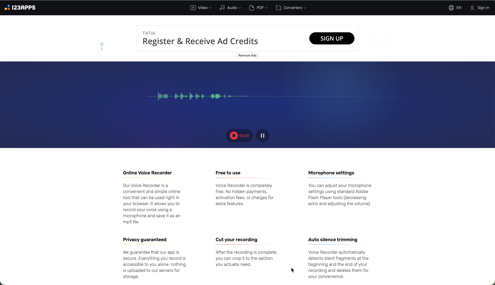
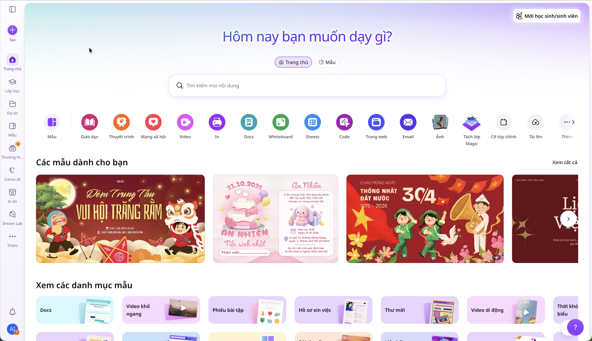

"Làm thế nào để khiến một học sinh cùng độ tuổi sẵn sàng lắng nghe thông điệp của nhóm trong 2–3 phút?"
Yêu cầu sản phẩm nộp: 01 tệp âm thanh hoàn chỉnh của nhóm (định dạng
.mp3 hoặc .mp4, thời lượng 2–3 phút).
Công Cụ Online Sử Dụng Trực Tiếp Trên iPad
| Công Cụ Online | Địa Chỉ Truy Cập (Safari iPad) | Mục Đích Thao Tác Kỹ Thuật | Lợi Thế Khi Dùng Trên iPad |
|---|---|---|---|
| Online Voice Recorder | online-voice-recorder.com | Thu âm giọng đọc kịch bản qua micro của iPad, cắt xén 2 đầu loại bỏ khoảng lặng/tiếng thở thừa và lưu file MP3. | Chạy trực tiếp trên Safari iPad, giao diện nút to dễ bấm cảm ứng, không cần đăng nhập. |
| Canva Video & Audio Web | canva.com | Tạo thiết kế Video để mở dòng thời gian (Timeline) âm thanh, lồng nhạc nền Lo-fi, hạ âm lượng nền 15-20% và áp dụng hiệu ứng Fade Out. | Kho nhạc bản quyền miễn phí khổng lồ, kéo thả timeline trực quan bằng ngón tay. |
| Ứng Dụng Tệp (Files) | Ứng dụng có sẵn trên iPadOS | Quản lý file âm thanh trong thư mục Tải về (Downloads) và nộp trực tiếp lên Canvas LMS. | Lưu trữ cục bộ an toàn, hỗ trợ nghe thử lại trước khi bấm nộp bài. |
Quy Trình Thao Tác Kỹ Thuật (Kèm Ảnh Chụp Màn Hình iPad Thực Tế)
Thực hiện tuần tự 4 bước trên trình duyệt Safari của iPad
1 Thu Âm Kịch Bản Giọng Đọc Bằng Online Voice Recorder
Trực tuyến trên Safari• Mở trình duyệt Safari trên iPad và truy cập: online-voice-recorder.com.
• Nhấn vào Nút tròn đỏ có biểu tượng Micro ở giữa màn hình để bắt đầu thu âm.
• Nếu Safari hiện thông báo hỏi quyền truy cập: Chạm vào "Cho phép" (Allow) để cấp quyền sử dụng Micro iPad.
• Đọc kịch bản đã có sẵn với giọng điệu tự nhiên, rõ ràng, khoảng cách từ miệng đến cạnh dưới của iPad khoảng 15–20 cm.
• Khi đọc xong toàn bộ kịch bản, chạm vào nút Tạm dừng / Dừng (Stop) hình vuông màu xanh/đỏ.


2 Cắt Xén Khoảng Lặng Thừa & Lưu Tệp MP3 Về Ứng Dụng Tệp
Cắt xén cảm ứng• Sau khi bấm Stop, màn hình sẽ hiển thị biểu đồ sóng âm thanh của đoạn vừa thu.
• Dùng ngón tay chạm và kéo 2 thanh màu xanh lam ở 2 đầu:
- Đầu bên trái: Kéo sát vào vị trí bắt đầu phát ra tiếng nói (loại bỏ tiếng thở dài hoặc tiếng bấm nút).
- Đầu bên phải: Kéo sát vào âm tiết cuối cùng của câu kết.
• Bấm nút Play (Phát thử) để nghe lại xem đoạn cắt đã mượt mà chưa.
• Chạm vào nút Lưu (Save) ở góc dưới bên phải → Safari iPad sẽ hiện hộp thoại thông báo tải về → Chọn Tải về (Download) để lưu tệp âm thanh vào ứng dụng Tệp (Files) → Tải về (Downloads).

3 Lồng Nhạc Nền Miễn Phí Bản Quyền Trên Canva (Bắt Buộc Chọn Dạng Video)
Kỹ Năng Quan Trọng
Trên Canva, nếu bạn chọn thiết kế ảnh tĩnh (như Áp phích, Tài liệu Docs, Bài đăng thông thường) thì KHÔNG THỂ tương tác với âm thanh đa kênh.
👉 Bắt buộc: Phải chọn mẫu thiết kế dưới dạng "Video" (hoặc "Video trên thiết bị di động") thì Canva mới kích hoạt Thanh dòng thời gian (Timeline) ở dưới đáy màn hình, cho phép chèn nhiều track âm thanh, cắt tách nhạc, chỉnh Volume và chỉnh hiệu ứng Fade!
1. Khởi tạo dự án Video: Mở Safari trên iPad vào canva.com → Chạm vào nút tím Tạo thiết kế (Create a design) ở góc trên bên phải → Chọn mục Video hoặc Video trên thiết bị di động (Mobile Video).
2. Tải đoạn thu âm lên (Chọn từ app "Tệp"): Chạm tab Tải lên (Uploads) ở thanh công cụ bên trái → Bấm nút Tải tệp lên → Lưu ý quan trọng: Chọn mục "Chọn tệp" (Browse Files) để duyệt vào ứng dụng Tệp (Files) → Tải về (Downloads) trên iPad (tránh bấm "Thư viện ảnh" vì file ghi âm MP3 nằm trong app Tệp!). File âm thanh sẽ xuất hiện trong tab Âm thanh (Audio) của Canva.
3. Mẹo tránh bị cắt cụt (Kéo dài thời lượng trang): Mặc định khi tạo mới, trang video của Canva chỉ dài 5 giây. Bạn chạm vào cạnh bên phải của trang video dưới dòng Timeline, kéo dài thời lượng trang ra từ 2.0 đến 3.0 phút (khớp với độ dài bài podcast của nhóm) thì âm thanh mới phát trọn vẹn mà không bị ngắt quãng giữa chừng!
4. Thêm nhạc nền Lo-fi: Vào tab Thành phần (Elements) hoặc tab Âm thanh (Audio) → Gõ từ khóa tìm kiếm: lofi beats chill hoặc background music podcast → Chạm chọn 1 bài nhạc êm dịu, không lời.
5. Cân bằng âm lượng (Volume 15–20%): Chạm vào thanh nhạc nền màu tím dưới Timeline → Chạm vào biểu tượng Âm lượng (Volume) trên thanh công cụ → Kéo thanh trượt xuống mức 15% – 20% (đảm bảo giọng đọc rõ ràng, nhạc nền chỉ thoang thoảng tạo cảm xúc).
6. Hiệu ứng mờ dần (Fade Out): Chạm vào thanh nhạc nền → Chọn nút Hiệu ứng âm thanh (Audio Effects) hoặc Mờ (Fade) → Kéo Fade out (Mờ dần khi kết thúc) khoảng 2.0 – 3.0 giây để bản podcast kết thúc êm ái, chuyên nghiệp.

Mở Safari truy cập canva.com trên iPad.

Bắt buộc chọn "Video" để mở Timeline âm thanh.

Dòng thời gian hiển thị thanh Âm thanh, Fade, Âm lượng.
4 Xuất Tệp Hoàn Chỉnh & Yêu Cầu Định Dạng Nộp
Định dạng MP3• Sau khi chỉnh sửa âm lượng hoàn tất, chạm vào nút Chia sẻ (Share) ở góc trên bên phải màn hình Canva → Chọn Tải xuống (Download).
• Sản phẩm cần nộp: 01 tệp âm thanh Podcast hoàn chỉnh (thời lượng 2–3 phút, nói tiếng Anh, có nhạc nền và fade out).
• Định dạng tệp chấp nhận: .mp3 hoặc .mp4.
• Quy cách đặt tên tệp: Lop_TenNhom_Podcast.mp3 (Ví dụ: 9A1_Team02_Podcast.mp3 hoặc 9A1_Team02_Podcast.mp4).
Bảng Kiểm Tra (Checklist) Nghiệm Thu Trước Khi Nộp
Lop_TenNhom_Podcast.mp3
Ví dụ: 9A1_Team02_Podcast.mp3
* 01 bạn nhóm trưởng đại diện nộp bài cho cả nhóm lên Canvas LMS.
- Thời lượng chuẩn từ 2 đến 3 phút.
- Giọng đọc tiếng Anh to rõ, không lẫn tiếng rè hay tiếng thở mạnh.
- Nhạc nền Lo-fi êm dịu, âm lượng 15–20% không đè giọng nói.
- Đoạn kết thúc có hiệu ứng Fade Out nhỏ dần mượt mà.
- Tệp xuất ra định dạng .mp3 hoặc .mp4 và phát trơn tru trên iPad.